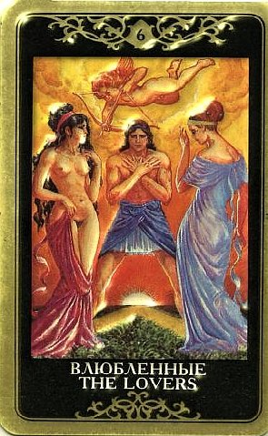

Значение карты – Испытание
Значение карты - Выбор! А кому из нас легко делать выбор, когда душа буквально разрывается между двумя альтернативами?
Между прошлым и будущим, старым и новым, прихотями и долгом... Внутриличностный конфликт – вот что предвещают Влюбленные.

То далеко не блаженное состояние, когда кажется, что решение принять невозможно, а обычно внятный внутренний голос превращается в многоголовую гидру, которая начинает петь хором невпопад, мол, сердце не камень, но и мозг не каша манная...
Влюбленные нередко в раскладах сообщает о выборе, перед которым стоит человек.
Если он совершит неверно свой выбор, то последствия могут быть совершенно непредсказуемы и даже опасны.
Благоприятна эта карта для вопросов любви.
Здесь часто она символизирует согласие, взаимное дополнение, возможность обладать партнером. Однако, следует опасаться чрезмерной увлеченности другим, сильных страстей.
При гаданиях на личные качества человека Влюбленные могут выражать его сомнения, интеллектуальную рефлексию.
Но если данная карта выпала в неблагоприятном окружении или в перевернутом виде, она обычно говорит нерешительности, бестактности, одиночестве человека, его ошибочном выборе. Нередко, неблагоприятное положение карты сообщает и о психологических проблемах в общении, некоммуникабельности человека.
Как раз конфликт между сердцем и умом проявляется наиболее остро, хотя это не обязательно (но если рядом Тройка Мечей, например, то обязательно).
Влюбленные всегда предупреждают, что этот выбор тебе еще «аукнется» (а может быть принятое решение повлияет на всю дальнейшую жизнь).
Разумеется, в самом типичном случае это выбор между тем, подавить желание или поддаться ему. Этот выбор может касаться не только партнера, но и профессии, путешествия, учебного заведения, дома, машины или стиля жизни в целом.
Причем альтернативы, как правило, являются взаимоисключающими, усидеть на двух стульях невозможно.
Старинные толкования подчеркивают позитивное значение Влюбленных – выпадая в раскладе, эта карта говорит о том, что будет сделан верный выбор! Влюбленные – это карта искренних поступков, совершаемых «не по закону, но по душе», полностью выражающих подлинные стремления человека. Конечно, страстная влюбленность сюда тоже относится.
Являясь сигнификатором вопрошающего, карта может описывать человека, сделавшего искренний выбор по велению души, осмелившегося пренебречь правилами и доводами рассудка.
Она может говорить и о том, что прямо сейчас человек стоит перед решением, которое потребует от него мужества и верности себе, и ему ни в коем случае нельзя поддаваться на манипуляции и давление. Выбор должен быть абсолютно добровольным, без сомнений и компромиссов. На этом распутье надо проявить всю силу духа. Это некая решающая проверка, испытание, экзамен.
Конечно же, событийное значение Влюбленных – это союз, появление в жизни кого-то, кто становится «дополнением». Полные взаимной радости связи, влечение, отношения, роман.
Любовь – это божественный дар и цель очень многих усилий.
Именно о любви задается большинство вопросов в гадательных практиках.
Выпадая в раскладе, Влюбленные предвещают новый роман в жизни, даже если у человек этого не предполагал. Они воплощают в себе все то, что является неотъемлемой частью любовной связи и близости между людьми.
Если вокруг нет негативных карт, то Влюбленные служат предзнаменованием прекрасных отношений. Для одиноких людей эта карта традиционно считается предвестником встречи с любимым человеком, истинным спутником жизни. Причем смысл Влюбленных не в том, чтобы форсировать события, судорожно занимаясь поисками любви, а в том внутреннем событии, которое заставляет открыться навстречу миру, делает человека по-настоящему восприимчивыми к возможностям, предлагаемым жизнью.
Влюбленные говорят, что человек вовлечен в какой-то альянс, что ситуация требует совместных действий, или что кто-то оказывает большое влияние на него (самооценка сильно зависит от отношения другого). Здесь проявлена необходимость общаться, поиск «общего знаменателя», какой-то точки зрения, которая позволила бы объединить противоположности
Есть мнение, что этот Аркан «связывает» карты, находящиеся по разные стороны от него.
ЛИЧНЫЕ ОТНОШЕНИЯ
Карта глубоких чувств, ответственного выбора, когда голос сердца подсказывает верный путь. Полная искренность, следование зову сердца, сила истинной любви.
Влюбленные – это начало нового сильного чувства или сохранение и укрепление старого, обещание нового романа, завязывание новых отношений, хорошие отношения между людьми.
Взаимность и гармония в отношениях, привязанность и преданность, крепкая связь, безоглядная самоотдача.
При подтверждении другими Арканами – вступление в удачный брак.
Это карта не только страсти, но и взаимных обязательств - здесь двое стоят в присутствии Высшей силы, поэтому их связывают заимные обязательства (как правило, не столько перед земным законом, сколько перед космическим).
Еще один важный аспект этой карты, отличающий ее от Двойки Чаш: Влюбленные являются индикатором любви, дружбы, сотрудничества или иной близости двух людей, между которыми есть некий БАРЬЕР.
Эти две души должны его преодолеть, чтобы по-настоящему слиться.
Здесь есть элемент антагонизма, противостояния, и это хорошо.
Противоположные черты в человеке, с которым мы устанавливаем связь, являются нашим отражением, ресурсом, дополнением и опорой.
Обычно партнер отражает и проявляет те аспекты, которые неразвиты, вытеснены или неодухотворены в нас самих. Поэтому-то «настоящий» партнер поначалу обычно вызывает не только влечение, но и изрядное раздражение.
Мы видим в другом то, чего нам не хватает, но относиться к этому можно по-разному, от «ура, в тебе это есть!» до «ну ты и фрукт!».
Влюбленные говорят о том, что пытаться истребить эти качества нет никакого смысла. Как говорил Наполеон Бонапарт, опереться можно лишь на то, что оказывает сопротивление. Влюбленные предлагают изжить не только опыт радости и счастья, но и боли, и борьбы, как взаимно обогащающий и открывающий глаза на себя самих. В этом случае именно четко сделанные выбор и взаимные обязательства являются тем необходимым элементом, который соединяет тех, чьи жизни должны течь вместе. На высшем уровне Влюбленные действительно описывают связь и близость, полную мудрости и созидания, по сути – обретение «идеального партнера», который далеко не идеален, но подлинно «вторая половина». Спрашивается, если не идеальна первая, как может быть идеальна вторая?! Это вполне может быть непростая связь, воплощающая единство и борьбу противоположностей, и покой опять же только снится. Союз антиподов, между которыми существует мистическая духовная связь и взаимные обязательства (из серии «браки заключаются на небесах» - обусловлены кармически). Их жизни должны идти вместе, несмотря на то, что их разделяет и делает антиподами. Каждая сторона содержит черты, нужные другой, для того чтобы выжить и расти, продвигаться по пути эволюции. В конечной точке развития они достигнут глубоких и прекрасных отношений, великого единодушия и сопереживания, тепла и созидательной мудрости.
В лучшем случае дарят друг другу желание и доверие, правду и преданность, честь и страсть. Они способны дать себе волю в выражении чувств, так как преодолели стадию борьбы, период антагонизма, фазу условностей и оговорок. Это тот случай, когда другой человек познан настолько глубоко и сущностно, что его ощущения, счастье и горе заботят больше, чем собственные.
В худшем случае им еще только предстоит понять и принять друг друга, преодолеть противоречия и стать единым целым. Они будут шокированы, уяснив однажды, до какой степени они - пара.
Любовь, чувственность, страстное желание, глубокая привязанность. Эмоциональный опыт тепла, сопереживания, преданности, наслаждение гармоничным союзом, который открывает в обоих лучшие стороны. В соседстве с благоприятными картами это действительно «блаженство влюбленных», которым человек чрезвычайно дорожит. Сексуальная гармония.
Выбор между двумя спутниками жизни. Наличие двух равноценных, эквивалентных по силе отношений. Необходимость принять некое окончательное решение (особенно если в раскладе доминируют мечи). Эта карта может предвещать любовный треугольник, ситуацию, когда один их влюбленных связан узами брака, или когда, например, два брата или две сестры влюблены в одного человека, и другие не особо безоблачные ситуации (больше об этом скажут окружающие карты). Это особенно актуально, если в используемой колоде на Аркане трое влюбленных. Вообще Влюбленные - не всегда «хорошая» в том смысле что легкая карта. Описываемая ими ситуация, какой бы она ни была, может быть наиболее драматичным моментом за всю жизнь человека. И не дай Бог обдумывать бессонной ночью выбор, который ты должен - и не имеешь права сделать...
Тенденция наделять партнера чертами своего собственного неосознаваемого образа, создавать проекцию, благодаря которой чувствуется счастье и наполненность. Склонность видеть в нем экран, на который удобно проецировать портрет иделаьной второй половины, и не замечать его подлинной натуры.